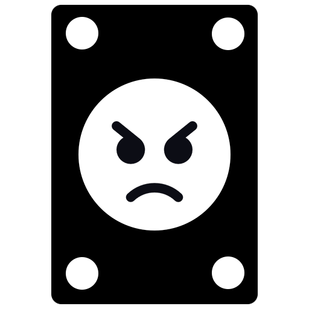
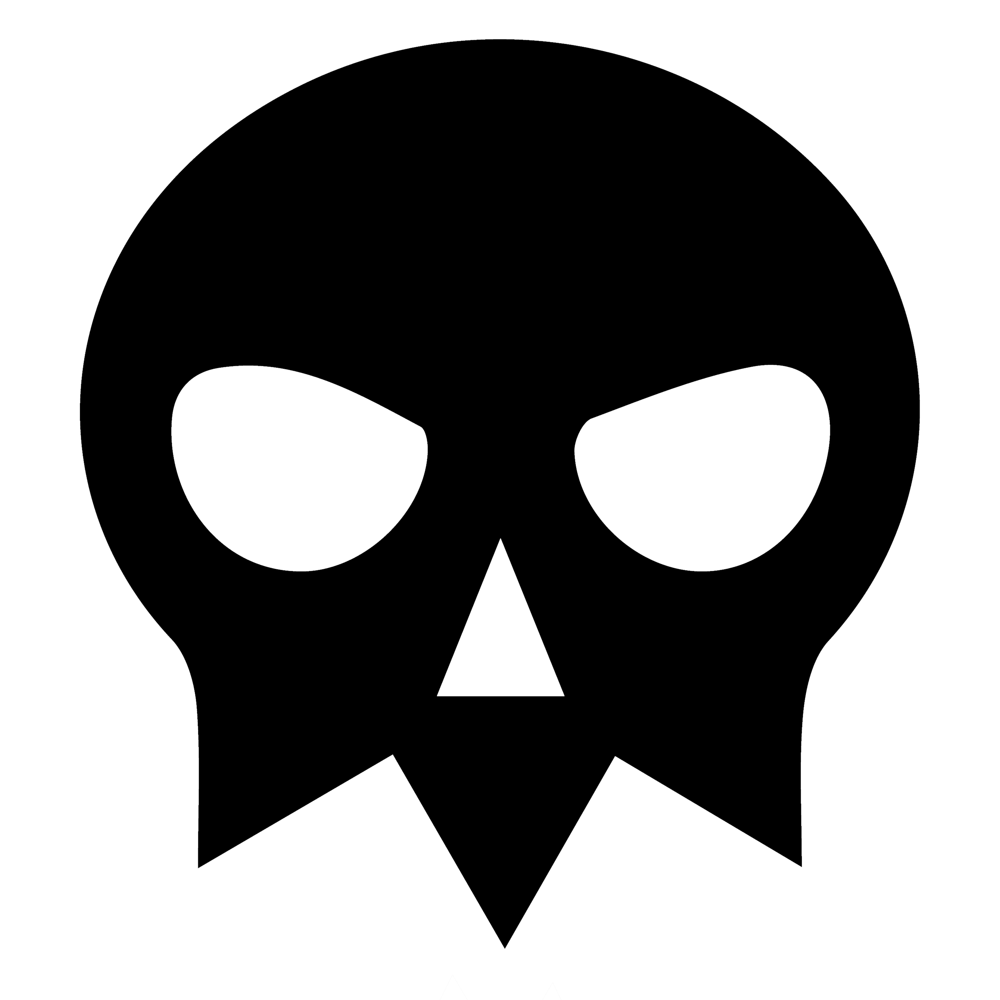
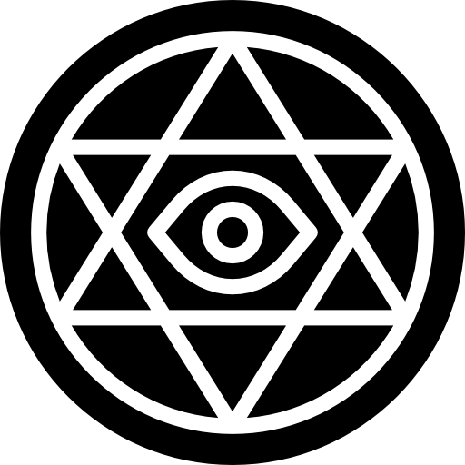

Отступление
Конструктор нелинейного сюжета был придуман в ходе выполнения тестового задания на должность гейм-дизайнера в Niceplay Games по игре Potion Craft (ссылка игры на Steam). Он не нашёл своё применение внутри Potion Craft, и вырван из контекста этого задания, но чтобы понимать о чём дальше будет идти речь достаточно знать лишь следующее:
1Главный герой игры — алхимик
2Тёмная гильдия — это древняя организация убийц, что контролирует город, в котором живёт алхимик
3Эдью Тьюст — парнишка, что походу сюжета может стать для алхимика врагом или союзником в зависимости от действий игрока
В самом задании также была продумана структура главного сюжета игры:
Структура сюжета и хода игры
Сам сюжет представлен в виде трёх актов: Экспозиция Борьба
Борьба Развязка. Это
известный сюжетный принцип:
Развязка. Это
известный сюжетный принцип:

 Таблица двигается свайпом
Таблица двигается свайпом
| Экспозиция | Борьба | Развязка |
|---|---|---|
| Пролог: Предыстория главного героя |
Конфликт №1: Вражда с другой гильдией/гильдиями |
Кульминация Смерть короля (убийство) |
| Раскрытие внутреннего устройства города: Знакомство с существующими гильдиями в игре |
Конфликт №2: Подозрение короля в связи с Тёмной гильдией |
Финал: Ритуал Тёмной гильдии |
| Побуждающее просшествие: Начальный квест Тёмной гильдии |
Кризис: Похищение алхимика |
Эпилог: Последствия ритуала/прерывания ритуала |
Этот принцип применяется потому, что он позволяет удобно работать с нелинейным интерактивным сюжетом. Где нелинейные события стекаются в заглавные события, что происходят всегда вне зависимо от выбора игрока.
Такой вид сюжета ещё называют «Параллельные пути», но в этом случае мы его модернизируем: эти заглавные события будут происходить в немного отличающихся друг от друга вариациях. В некоторых деталях на них влияет выбор, что был сделан игроком по ходу игры до этих событий (тот же ритуал призыва Пожирателя, который может обернуться самым разным образом в зависимости от выбора накануне).
 Мини-сюжеты
Мини-сюжеты
По ходу участия в главном сюжете, игрок также будет постоянно встречаться с различными мини-сюжетами — историями клиентов лавки. Клиенты, прям как карты в колоде, будут каждый раз тасоваться при новом прохождении. Клиенты делятся на 3 разных типа зависимо от конкретного акта. Некоторые из этих клиентов могут влиять на главный сюжет игры, например, на этап «Кризиса», где какой-либо из клиентов способен стать для алхимика союзником или противником. Сам по себе этап «Кризис» — это рассказ-конструктор, принцип работы которого описан ниже.
Рассказы-конструкторы
По ходу прохождения игрок будет принимать важные сюжетные решения, что повлияют на этапы «Кризис» и «Финал». Каждое из решений формирует отдельную часть истории, когда сама история состоит из нескольких подобных частей. Каждая из частей может оказаться заместо другой такого же вида. В случае отсутствующей части на определённом этапе истории тот принимает один из возможных стандартных вариантов. Эта механика позволяет игроку «собирать» собственную уникальную историю по ходу игры.
Таким образом, задействуется элемент Roguelike, что делает игру крайне реиграбельной. Забавно, но это образно напоминает Slay The Spire с сюжетной начинкой, где монстры это мини-сюжеты, а боссы актов — рассказы-конструкторы.

На примере «Кризиса» и «Финала» выясним как же работает конструктор сюжетов:
— Кризис игры
—
Похищение алхимика Тёмной гильдией
В ходе кризиса, алхимика похищает Тёмная гильдия.
Для того, чтобы выжить в течении этого непростого этапа, алхимик должен осуществить — «Освобождение  Побег
Побег  Укрытие». Всё это отдельные части истории — 3 позиции рассказа-конструктора, что могут занимать карты союзников или противников:
Укрытие». Всё это отдельные части истории — 3 позиции рассказа-конструктора, что могут занимать карты союзников или противников:

 Карты союзников
Карты союзников
Чтобы с большим шансом на успех пройти этот непростой игровой этап, игрок должен до его наступления найти по ходу игры содействующих в прохождении союзников. Союзники создают в ходе истории положительные повороты и позволяют миновать кризис без потерь. Если игрок получил несколько союзников на одну позицию, то рандомится какой-то из них с равным шансом между всеми.
Игроку до кризиса желательно найти 3-ёх союзников на каждую из позиций, потому что их отсутствие на каком-либо слоте провоцирует упасть на него обычную карту с зачастую не всегда благоприятным раскладом истории.
 Обычные карты
Обычные карты
Если игрок не нашёл в течение игры союзников или противников на какую-то конкретную позицию в истории, то на пустой слот всегда упадёт обычная карта. Обычная карта — это попытки алхимика справится по ходу истории в одиночку. У него может это получится, а может и не получится. Историй того, как это может происходить множество, но рандомно выпадает из списка только одна. На то какой именно выпадет исход влияют следующие условия:
- 0 союзников — алхимик умирает на первой же обычной карте.
- 1 союзник — такой игрок с шансом в 50% получит историю со смертью алхимика при взятии обычной карты.
- 2 союзника — такой игрок с шансом в 25% получит историю со смертью алхимика при взятии обычной карты.
- 3 союзника — игрок с таким количеством союзников однозначно выживет в ходе кризиса.
Карты противников
Но алхимик в ходе прохождения может найти не только сотоварищей, но и навлечь на свою голову проблем — карты противников. Они же потенциально опасны для игрока из-за того, что с шансом в 50% заменяют карту союзника и всегда встают на пустой слот заместо обычной. Если же игрок получил на одну позицию двух противников, он получит одного из них с равным шансом в 100% вместо карты союзника.
Противники могут быть самыми разными: в ходе своей части истории они могут навредить, могут отобрать имущество, могут лишить жизни. Какую именно историю они создают зависит от самого противника.
Примечание: Если алхимик был убит на какой-то позиции, то дальнейшие этапы не описываются в истории
 Кликните для увеличения
Кликните для увеличенияВ ходе кризиса игрок увидит интро похищения, что реализовано текстовыми вставками с иллюстрациями. После чего перед ним откроется интерфейс с позициями, что займут карты союзников или противников, на пустые же слоты упадут обычные карты.
Сами карты изначально неизвестны игроку и лежат вверх одинаковыми рубашками. Игрок может открывать карты только в последовательности 1 2
2 3. Пока не открыта предыдушая карта, следующую открыть не выйдет. При нажатии на карту — карта переворачивается, и игроку показывается, кто на ней оказался.
3. Пока не открыта предыдушая карта, следующую открыть не выйдет. При нажатии на карту — карта переворачивается, и игроку показывается, кто на ней оказался.
При наведении мыши на открытую карту игрок видит Краткое описание того, что произошло на этом этапе истории, при нажатии же на карту он может прочитать Полную историю. Союзник или противник могут обернуться картой для взаимодействия:
 Карты для взаимодействия
Карты для взаимодействия
Карты требующие вмешательства со стороны игрока. Такая карта при развороте поверх помечается восклицательным знаком. При нажатии на неё открывается не Полная история, а окно взаимодействия. Видов взаимодействия три:
1 Выбор из нескольких вариантов. Открывается в отдельном всплывающем окне, где вверху написано пояснение к выбору, а остальную часть интерфейса занимают варианты выбора. Слева находится иллюстрация весов.
2 Сюжетные диалоги. Работают по тому же принципу, что и до кризиса, но так как алхимик вне лавки они сопровождаются уникальной для диалога миниатюрной иллюстрацией, что старается передать атмосферу диалога и поддерживать образ игрока.
3 Проверки. Открываются в схожем интерфейсе, как и выбор из нескольких вариантов, но слева находятся не весы, а игральные кости.
После окончания взаимодействия с картой открывается Полная история, что адаптирутся под итог взаимодействия.
Разберём принцип работы союзника и противника на примере Эдью Тьюста.
Эдью-союзник
 Позиция: Освобождение
Позиция: Освобождение
 Роль: Освободитель
Роль: Освободитель
Краткое описание
Вас освободил Эдью Тьюст — уборщик Тёмной гильдии, в знак благодарности за помощь в его неудавшимся побеге. Он незаметно от охранника кинул вам ключ, сделав вид, что убирается в темнице. Ночью вы бежали.
Полная история
Оказавшись в темнице, вы услышали как со стороны главного входа зашёл человек в капюшоне, что заговорил с охранником. Он сообщил, что ему велели убрать здесь помещение. Но в ответ охранник рявкнет на него, сказав, что тут ни разу не убирали с ещё самого первого дня его работы. Уборщик в своё оправдание скажет о том, что был прямой приказ сверху от самого владыки. Почесав репу и ещё немного подумав, претензии охранника всё же спадут на нет. Ведь тот знает: с начальством лучше не спорить.
Получив разрешение, уборщик поднимет свое ведро с тряпкой и начнёт протирать узкие коридоры темницы. С каждым звуком перестановки ведра с одного места на другое, он всё ближе будет подбираться к вашей камере. Вы подойдёте к решётке и заметите как уборщик копошится в кармане своего балахона. Внезапно он достанет ключ и постарается незаметно кинуть его вам. Да только тот в полёте все равно сильно удариться об решётку и издаст громкий звук. Охранник не мог не среагировать на это и тут же с недоумением выйдет из-за угла.
От такого паренёк опешит и опрокинет ведро, разлив по темнице всё намытое. Хоть охранник и поднимет крик до потолка, но на удивление всё это отвлечёт его и он забудет об услышанном звоне от ключа. Всё же парня прогонят, чтобы он сказал владыке привести мыть пол кого-нибудь менее неуклюжего. В момент его ухода на вас упадёт озарение и вы поймёте, что это был за парень: это Эдью Тьюст, которому вы помогали бежать из города когда-то, но у него не вышло. Он всё ещё работает уборщиком в Тёмной гильдии.
Ночью вы используете новообретённый ключ дабы совершить побег.
Эдью-противник
Позиция: Освобождение
Роль: Убийца алхимика/освободитель
Взаимодействие: Диалог
Краткое описание
Вы связаны и прикованы к стулу, перед вами Эдью Тьюст, что по заданию Тёмной гильдии убил Старшего чародея Рузорда вместо того, чтобы бежать из города. Он винит вас в том, что он стал одним членом Тёмной гильдии, ведь когда-то вы дали ему ту самую склянку с ядом, которая и позволила убить мага.
Он даёт вам шанс на последнее слово. Сможете ли вы оправдаться перед ним или станете его следующей жертвой?
При нажатии на карточку Противника Эдью Тьюста, игрок вступит в диалог:В ходе диалога игрок может прийти к сценариям, что делятся на два типа: конец игры или же успешное прохождение этапа «Побег».
1Конец игры
Возникает  звук гибели игрока от ножа Тьюста, и игра переходит к окну конца игры, в котором выводится Полная история
карты Эдью-противника.
звук гибели игрока от ножа Тьюста, и игра переходит к окну конца игры, в котором выводится Полная история
карты Эдью-противника.
Примечание: Если диалог закончится фразой Эдью «Вы виноваты в том, что я стал этим чудовищем» он обретёт в сейв-файле Истинную концовку «Эдью-противника» и получит Steam-достижение:

2Освобождение алхимика
Перед игроком также открывается Полная история карты. Когда он её закроет перед ним снова окажется интерфейс с позициями, однако теперь появится возможность
перевернуть следующую карту — карту «Побега».
Полная история
Когда вы оказались привязанным к стулу в темнице, внутрь зашёл человек в капюшоне подкидывая нож в воздух. Его лица не было видно до того момента, пока он не встал напротив вас. В это самое мгновение вы тотчас же побледнели: перед вами был позврослевший Эдью Тьюст.
Внутри Тьюст знал, что только на нём лежит вина за убийство чародея Рузорда, но всё эти годы он подавлял её, продолжая перекладывать свой проступок на вас. Ведь если бы у Эдью тогда не было яда, ведь если бы алхимик тогда не передал эту злосчастную склянку, он бы конечно сделал, что угодно, но не опустился бы настолько низко, чтобы кого-то убить.
Все эти обвинения в один момент обрушаться на вас. Вы же будете поджимать своё шею подальше от ножа Тьюста и пытаться выговорить хоть что-нибудь в свою защиту. Попытка напомнить Эдью, что тот сам изначально хотел совершить побег, но почему-то передумал, не возымеет успеха. Ведь на это Эдью тут же ответит, что в самый последний момент он вывихнул ногу и поэтому не видел иного выхода, но обязательно увидел бы его, если бы не чёртов яд... что видимо отравил не только Рузорда, но и душу Эдью Тьюста...
 Если Эдью освободил алхимика:
Если Эдью освободил алхимика:
Но после разговора с Эдью, кажется, у вас получилось «найти противоядие», и убедить его, что путь убийцы — не для него. Тьюст пришёл в себя и разрезал путы, что связывали вас со стулом, после чего скоротечно удалился. Несмотря на это, он всё же оставил дверь в камеру открытой, и это позволило вам сбежать из темницы. Вот только как вы сможете выбраться из здания, в котором оказались?
Если алхимик был убит после того, как назвал Эдью чудовищем:
Вы не могли поверить в то, что Тьюст хочет убить вас после того, как вы пытались помочь ему. Из-за чего вышли на эмоции пытаясь объяснить простую истину. У вас до последнего не помещалось в голове в кого превратился тот мальчонка Эдью Тьюст. В чудовище.
Как говорят: как корабль назовешь, так он и поплывет. И похоже, что он приплыл... собственно, как и вы: Тьюст убил вас с недоумевающей физиономией на лице... теперь живите с этим. Ха?
 Если алхимик был убит, но не называя Эдью чудовищем, а по другой причине:
Если алхимик был убит, но не называя Эдью чудовищем, а по другой причине:
После недолгих попыток вразумить Эдью, и лишь одного взмаха ножа, вас настигла участь быть убитым от того, кому вы когда-то возжелали помочь. Эдью отблагодарил вас тем, что оставил задыхаться в собственной крови.
Справедливо ли это? Нет, но это реально.
По ходу прохождения игрок будет часто умирать, но мы купируем эффект отторжения за счёт получения общего опыта за игровой счёт в партии, что даёт новый игровой опыт в последующих прохождениях. При повышении уровня, игрок получает доступ к новым клиентам. До этого эти клиенты не посещали лавку и в принципе не могли прийти.
Теперь к вам в лавку будут приходить 3 новых клиента!
— Финал игры
—
Ритуал Тёмной гильдии
«Финал» — второй рассказ-конструктор, что устроен тем же принципом, что и «Кризис». Те же 3 позиции, но другие типы карт:
Каждая из позиций закрывается картами, что добываются в ходе прохождения игры:
 Новый король — определяется в ходе основного сюжета. Новый король заменяет прежне умершего короля и возглавляет поход на Храм Пожирателя. Влияет на
послефинальные события сюжета.
Новый король — определяется в ходе основного сюжета. Новый король заменяет прежне умершего короля и возглавляет поход на Храм Пожирателя. Влияет на
послефинальные события сюжета.
 Военачальник — определяется в ходе гильдийского сюжета. Им становится актуальный глава гильдии, в которой находится алхимик. Бафает
войско и процентно увеличивает успех операции.
Военачальник — определяется в ходе гильдийского сюжета. Им становится актуальный глава гильдии, в которой находится алхимик. Бафает
войско и процентно увеличивает успех операции.
 Войско — зависит от той гильдии, в которой находится игрок. Их алхимик снабжает боевыми зельями для успеха операции.
Войско — зависит от той гильдии, в которой находится игрок. Их алхимик снабжает боевыми зельями для успеха операции.
 Лор
Лор
Главным антагонистом всего сюжета и является Тёмная гильдия. Её влияние в королевском дворце оказалось настолько сильным, что убив прежнего короля у них почти получилось передать престол их подставному наследнику — отцу Эдью Тьюста. Но остальные гильдии не признали его своим правителем, заподозрив в сговоре и убийстве предыдущего короля, вследствие чего королевский совет раскололся на два лагеря.
В ходе этих дворцовых перепалок, гильдии игрока удастся найти компромат на нового короля и свергнуть его. В течение этой операции алхимику станет известно о таинственном ритуале. Всё это повлечёт за собой финальную битву между Тёмной гильдией и Королевской армией. Игрок сможет выбрать необходимого короля перед финалом из тех, что у него окажутся в пуле. У него есть на то возможность потому что по ходу гильдийского сюжета, алхимик всегда становится советником главы Гильдии вследствие чего принимает участие во дворцовых делах.
В ходе сюжета каждый из возможных обретённых игроком королей хотят остановить ритуал, они делают это под разными предлогами и целеполаганием. Некоторые из них могут оказаться предателями, другие находятся под влиянием Тёмной гильдии и не хотят лишних жертв, а часть желает остановить деятельность Тёмной гильдии тем или иным образом.
Примечание: Если игрок не смог найти подходящего короля за время игры, то сюжет адаптируется под это и выдаст не самый радостный исход событий, в котором отец Эдью Тьюста всё же полноценно воссядет на трон и погрузит королевство в тёмные времена.
Устройство финала
Как и в случае членства в Тёмной гильдии, алхимик должен подготовить армию боевыми зельями, что будет сражаться в Финале. Событие финала также рандомно и имеет два расклада — успех и провал. Каждое приготовленное зелье за выданный игроку промежуток времени улучшит результативность войска и суммарно повысит шансы на успех операции.
 Военачальник, которого получит игрок также влияет на успех. Он процентно увеличивает результативность тех зелий, что сделал игрок. Количество этих
процентов зависят от самого военачальника, потому что их качество варьируется. Как таковой военачальник отсутствовать не может: либо он опытный, либо игрок плохо выполнял гильдийские задания и он такой себе.
Военачальник, которого получит игрок также влияет на успех. Он процентно увеличивает результативность тех зелий, что сделал игрок. Количество этих
процентов зависят от самого военачальника, потому что их качество варьируется. Как таковой военачальник отсутствовать не может: либо он опытный, либо игрок плохо выполнял гильдийские задания и он такой себе.
 Войско, делится на два параметра:
Войско, делится на два параметра:
- Тип: только косметический и влияющий на сюжет атрибут. Определяется той гильдией в которой находится игрок. Гильдия магов — волшебники, Торговая гильдия — наёмники, Гильдия войнов — рыцари.
- Количество: определяется количеством заработанной репутации игрока в гильдии в течение игры. Этот атрибут также суммарно увеличивает успех операции.
 Новый король тоже влияет только на поворот сюжетных событий. У каждого из королей есть свой подход, что влияет на то каким
реформам он подвергнет королевство после финальных событий. Как можно догадаться эту позицию может занять Эдью, у которого получилось осуществить побег от Тёмной гильдии:
Новый король тоже влияет только на поворот сюжетных событий. У каждого из королей есть свой подход, что влияет на то каким
реформам он подвергнет королевство после финальных событий. Как можно догадаться эту позицию может занять Эдью, у которого получилось осуществить побег от Тёмной гильдии:

Подход:  Радикализм
Радикализм
Взойдя на престол, Эдью будет руководствоваться прямолинейным подходом в решении проблемы Тёмной гильдии — «полное истребление этой мерзкой организации». В финальной битве он с особой жестокостью расправиться с каждым из её членов, а после демонстративно развесит тела всех причастных дворян к Тёмной гильдии на городской площади. В том числе и собственного отца.
В последствии, он создаст организацию, чьей основной задачей будет искоренение остатков Тёмной гильдии и её влияния в дворцовых кругах.
Изначально конструктор сюжетов был придуман в ходе выполнения большого тестового задания в Niceplay Games.
 Гейм-дизайн
Гейм-дизайн Игровая система: Диалоговая система для симулятора
алхимика
Игровая система: Диалоговая система для симулятора
алхимика Тестовое задание на Level
Designer Match-3
Тестовое задание на Level
Designer Match-3 Статья: «Mirror’s Edge, или как
гениальная идея для игры превратилась в её первостепенную проблему»
Статья: «Mirror’s Edge, или как
гениальная идея для игры превратилась в её первостепенную проблему» Таблица Google Sheets: Простая
система повышения уровня в CRPG
Таблица Google Sheets: Простая
система повышения уровня в CRPG UX/UI: Документ по улучшению интерфейса для Dark Bestiary
UX/UI: Документ по улучшению интерфейса для Dark Bestiary Задачи на теорию вероятностей
Задачи на теорию вероятностей Тестовое задание в компанию Z-Media
Тестовое задание в компанию Z-Media Нарратив-дизайн
Нарратив-дизайн Пример: Персонаж для
симулятора алхимика
Пример: Персонаж для
симулятора алхимика Текст:
Короткие описания предметов и игровых
объектов
Текст:
Короткие описания предметов и игровых
объектов Художественный рассказ: История о девочке, что хотела стать пиратом
Художественный рассказ: История о девочке, что хотела стать пиратом